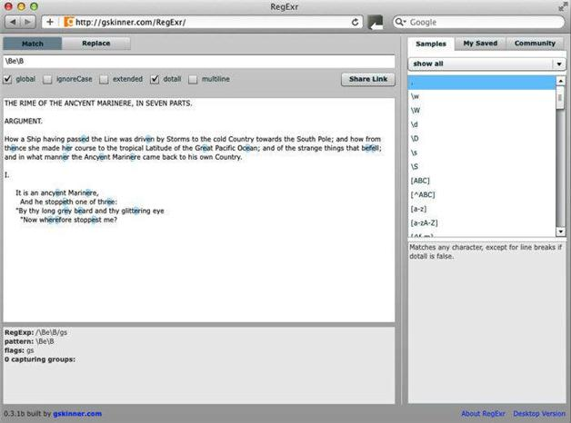

3.2 单词边界与非单词边界
我们已经多次遇到使用\b的情况了。它匹配单词边界。请尝试：
\bTHE\b
（在勾选global选项的情况下）这个表达式会匹配第一行的两个THE。就像^和$一样，\b是个零宽度断言，表面上它会匹配空格或者是行起始，而实际上它匹配的是个零宽度的不存在的东西。你有没有注意到第二个THE两边的空格是没有标亮的？这是因为它们不是匹配的部分。这个理解起来不是很容易，但你可以通过观察它匹配和不匹配的内容来理解。
你还可以匹配非单词边界。非单词边界匹配除单词边界之外的位置，比如单词或者字符串中的字母或数字。要匹配一个非单词边界，试一下：
\Be\B
看看它匹配了什么（参见图3-2）。可以看到它匹配了小写字母e，而匹配的字母e的两边都是其他字母或者是非单词字符。零宽度断言不会匹配两边的字符，但它会识别文字e的两边是否是非单词边界。

图3-2 用\B来匹配非单词边界
在有些应用程序中，指定单词边界的另一种方法是使用：
\<
来指定单词的开头，而使用
\>
来指定单词结尾。这是比较旧的语法，在很多最新的正则表达式应用程序中无法使用。但在有些情况下，这种语法就很有用，因为它不会像\b那样匹配任意单词边界，而是允许你分别匹配单词的开头或结尾。
如果你的系统上有vi或者vim，可以用这类编辑器试一下。即使你没用过vim，这也很简单，只要按照以下步骤做即可。在命令行或者shell窗口中，将路径改为诗文所在的地方，再用这个命令打开：
vim rime.txt
然后输入以下查找命令：
/\>
再按回车键（Enter）或返回键（Return）。在vim中使用斜杠符（/）开始一次查找。请观察光标，可以看到本次查找过程会找到单词的结尾。按下按键n可重复查找。再输入：
/\<
再按回车键（Enter）或返回键（Return）。这次查找会找出单词的开头。要退出vim，键入ZZ即可。
这一语法也可用于grep。自从20世纪70年代，grep像sed一样一直是Unix系统的主要工具。（20世纪80年代，我一个同事的车牌上面就写着GREP。）在shell提示符中试试这个命令：
grep –Eoc '\<(THE|The|the)\>' rime.txt
-E选项表示要使用扩展的正则表达式（ERE），而不是grep默认使用的基本正则表达式（BRE）。-o选项代表结果只显示一行中与模式相匹配的那部分。-c选项的意思是只返回结果的数量。单引号中的模式会对THE、The或者the进行整词匹配。这就是\<和 \>帮你寻找的。
这个命令返回的是：
259
也就是找到的单词的数目。
另一方面，如果不使用\<和\>，结果则不同。这样做：
grep –Eoc ‘(THE|The|the)’ rime.txt
得到的数字就是：
327
为什么？因为该模式只匹配整词和任意包含该词的字符序列。这就是\<和\>能派上用场的一个原因。